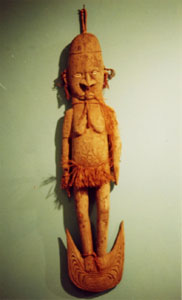

|
第３ 出 陣
 昭和１７年（１９４３年）に北満の孫呉に駐屯し第四軍通信隊・無線小隊長の任務に就いておりましたが、この年１０月に電信第三聯隊第二中隊に復帰していました。１１月中旬に部隊全員が参加し、新京より南方にある鉄嶺で、有線無線の合同演習が実施されていましたが、大本営より部隊本部に命令が下達されたので演習を中止し慌ただしく部隊全員が新京に引き揚げました。１１月１４日の夕方三時頃、中隊長大原中尉から 『山口少尉は明朝八時までに、完全武装を整え、営庭に集合すべし』と、いう命令を受けました。私は直ちに分隊長全員を呼び、出動準備を命じました。徹夜で準備作業が始まった。燃料、乾電池、モビール油、グリース、電報用紙、鉛筆、通信器材の梱包等に火の車の忙しさでした。各内務班には夜どうし電灯が明々とついていた。夜がしらじらと明けてきて朝を迎えると、一夜にして凛々しい親愛なる山口無線小隊が出来上がりました。かくして、中隊本部前に小隊全員が整列し、大原中隊長に申告と挨拶をすませ、幹部の松本少尉、野中少尉、山下少尉、高田曹長に挨拶をすませ営庭の南広場に向った。私は四列縦隊の先頭に立ち、抜刀した軍刀は朝日に輝き、顔は紅潮していました。 時を同じくして、あっちからも、こっちからも同期の陸軍少尉が無線小隊を指揮して威風堂々と集合してくる。私はホッと安堵しました。全員同年兵の仲間で甲幹の少尉ばかりだ。この時は本当に嬉しかった。小隊長は武吉君、福崎君、山崎君、藤原君、武井さん小生の六名だった。松本部隊は無線五ケ小隊と器材一ケ小隊及び指揮班からなる約三百人の堂々たる通信部隊でした。 昭和１７年１１月１５日、電信第三聯隊長内田中佐以下の幹部に見送られて、電信第三聯隊の本隊より一足先に松本無線通信部隊は昭和１７年１１月１５日の早朝、新京駅を軍用列車で出発し一路大阪に向いました。 満州国と大日本帝国との国境に有る安東駅では何の検査も受けず朝鮮に入国した。車窓から見られる朝鮮駐屯の日本軍はまるで玩具の兵隊のようだ。赤い軍帽をかぶりサーベルを腰にさげている。一方、関東軍は戦闘帽をかぶり軍刀をさげ戦闘姿勢で、ソ連極東軍を牽制していました。山崎少尉は『俺は輸送指揮官だ』と、いって威張っていた。軍用列車内では殆どが現役兵のため、なかなか行儀はよかった。釜山に着いたが関釜連絡船の乗船手配のため西面廠舎に二泊することになった。ここにはアメリカ軍の捕虜が沢山収容されていました。この捕虜はフイリッピンのコレヒドルで日本軍に捕虜になったという事でした。 彼等に、「どうして？捕虜になったか」と尋ねてみました。捕虜たちは、口々に、コレヒドルの戦闘では制空権は日本軍にあり、日本の飛行機は圧倒的に多く、上空を飛ぶのは日本の飛行機ばかりだった。アメリカの飛行機は数が少なく、雲の上を飛んでいて、雲の下を飛んでいる日本の飛行機が爆彈を沢山落とすので、我々はどうしょうもない。余りにも爆撃がひどかったので、降参し捕虜になったんですと言った。そばにいた兵隊たちはこの話を聞いて、みんなワーツと喜び洪笑した。 アメリカの捕虜たちは、日本軍の将校には敬礼した。どうして？我々に敬礼するのか、とまた、尋ねてみた。すると、「日本軍の将校には敬礼するように」と憲兵から命令されていると言った。敵の捕虜に敬礼されるといい気分でした。憲兵の話によると、『アメリカの捕虜はこれから酷寒を迎える北満に連行し道路構築人夫として使役する』という事でした。 ……北満とは奉天だった事を終戦後、数十年経ってから知りました。また、終戦時にソ連軍がこの捕虜達を解放したとも新聞に書いてあった。これからいく戦場でこんな敵と戦うなら怖くないと安心し勇気も出てきた。…… 同じ幹部候補生（以降幹候）出身の仲間でも要領のよい奴は夜、密かに西面廠舎を抜け出し社会探訪に出かけた豪の者もいた。同期の山崎君と福永君は戦場に着いてからその事を私に喋りました。「虫が知らせる」と言うのでしょうか？この御仁達はニユーギニアで戦死しました。色々のことがあって、荒れる冬の玄海灘を連絡船で渡り、下関で再び汽車に乗り替え大阪に向かったが途中で命令が変更になった。「広島に下車し次の命令を待て」という大本営命令を受け広島駅に下車した。広島市では民宿となり、そこのおかみさんが一生懸命に接待して下さった。面会にくる家族もあった。 松本少佐殿は大本営に命令受領のため上京しました。留守の間、我々の征く先は北方らしい、エトロフらしいという噂が飛ぶ。冬服を着ているし、関東軍は寒さには強いから当然とも考えられる。ところが、一泊したら夏服が支給になった。噂はコロリと変わった。インドのインパール作戦にいく。いやそうでないラバウルだと言う。ラバウルは何処だ？折田君が何処からか一枚の地図を持ってきた。南太平洋上に浮ぶニユーブリテン島の北端にラバウルがあった。この一帯をビスマルク群島といい、さらにソロモン群島と続く。なあんだ！ここか？とやっと安心した。地図の上では行く先は判ったもののラバウルの知識を持っている者は一人もいなかった。 ……ふと、学生のとき、「パプアニユーギニアの土人は頭髪が縮れている。日本人でも頭髪が縮れた人はミスターニユーギニアだ」と言った先生のことを思い出した。先生は地質の学術調査でニユーギニアに行き、そのことを知ったのであります。また、スノーラインのあることも教えてくれました。ニユーギニアは熱帯ではあるが、このスノーラインが有るから山には雪がある筈ずである。この事を知らないで全滅した部隊もありました。…… 松本部隊が広島で民宿中は、「手紙を出してはならない」「無断で外出してはならない」と軍律は厳しかった。私は忠実に守ったが、要領のいい奴は手紙は出す、市内に社会探訪にも出かけ母国の最後を楽しむと、いう御仁もいた事をラバウルに上陸し、暫く経ってから陣中の暇な時、そんな裏話を聞き、うまくやったなあ！と悔しかった。ラバウルに向かう前日、福崎少尉と二人で街の屋台で酢蛸の天丼を食った。実に旨い酢蛸の天丼だった。彼はラバウルからブナに敵前上陸したがそこで戦死した。彼がブナに向かう前日、「今度は俺は死ぬ」と私につぶやいた。どうしてそんなことを言うのか？といぶかったが彼の予感は的中しました。 ……福崎少尉と広島で酢蛸の天丼を食ったことが忘れられない思い出になりました。東部ニユーギニア作戦で３年３ヶ月に亘り戦いましたが、「俺は死ぬのではないか」と予感した事は一度も有りませんでした。…… 話は広島に戻って、街を歩いている女性を眺めると皆んな美人に見えました。彼女たちは派手な服装で街を闊歩している。女性はいいなあ！戦争に行かなくてもよい。「俺たちはこれから戦場に行くのだ！」と大声で怒鳴ってやりたかった。こんな風に考えたら腹が立ちました。国民には出陣を知られないように密かに出港し誠に惨めな出陣でした。 昭和１７年１１月２０日、我々が乗船した輸送船は夜が明けない早い時刻に宇品港を出港した。この輸送船はドイツ商船を改造した一万トン級の仮装巡洋艦だという。甲板は飛行機が飛べるのではないかと思われ、外観は航空母艦のように見えました。将校も下士官も兵も、ぎゅうぎゅう船内に詰めこまれました。私たちは小隊長だけのグループを作り畳敷きの上に寝ました。今ここは太平洋のど真ん中である。何だかそら恐ろしくなってきました。他にすることもないので畳の上で終日横になってゴロリとしていました。船の小さい丸窓から外を眺めていると、暫くは雲ひとつない青空が見え、今度は空が見えなくなり、青い海ばかりをゆっくり眺めることを繰り返す事になる。海軍さんに波の高さを聞いたら、「波の高さは十メートルは越す」と言う。来る日も来る日も食欲は全然わかない。どんな食事だったか全然記憶にない。苦しい１２日間の船旅でした。 航海中のある日、甲板に出てみました。四方八方海ばかりでした。甲板の上でぐるりと３６０度回ってみたら地球はなるほど丸いなあと言う実感がわきました。一方、我々の輸送船を海軍さんは護衛してないようだ。一隻の軍艦の姿も太平洋上には見なかった。また、商船の姿も見なかった。果てしない太平洋が何処までも続いている。敵の攻撃に会ったら絶対に助からないだろうと思った。 航海中のある日の朝、イルカの大群が、海面を飛び上がったりまた潜ったりして、暫くの間軍艦と同じ方向に泳いでいた。「あれがイルカの大群だ」と誰かが大声で叫んだ。雄大な自然の眺めであります。暫くの間イルカの群れを眺めて楽しみました。甲板では大森第一分隊長が小隊全員を集めて体操していた。何時？敵が攻撃して来るか判らない戦場でしたから赤道祭なんかは有りませんでした。また、赤道を何時？通過したか分かりませんでした。赤道を越えたので、いよいよ敵の航空圏内に入りましたが、空襲を受けることもなく、また、敵の潜水艦から攻撃を受けることもなく、１２日間の航海をへて無事ラバウルにつきました。 湾内に停泊して居たら、上空に世界で一番早い隼戦闘機が時速６５０キロという凄い速さでヤシの葉すれすれに飛んでいく。湾内では真っ白い船体に真っ赤な十字を描いた赤十字船が停泊していた。なんとも心強い眺めでした。また、目を凝らして湾内を眺めたら帝国海軍の駆逐艦とか洋艦等が堂々と停泊していた。これが勝ち戦の眺めであらう！実に壮観な眺めで、ナント素晴らしい眺めであろうか！と叫びたい思いでした。勝者の優越感をこの時は十分に堪能しました。このような素晴らしい空の下でラバウルに昭和１７年１２月２日（１９４２年）上陸しました。 ……「知らぬが仏」とはよくぞ言ったものです。ラバウルに上陸した少し前、昭和１７年８月には日本陸軍はガダルカナルで建軍以来初めてアメリカ陸軍に負けていたのです。また、１１月には、ブナ、ギルワに集結していた南海支隊はマッカーサー大将指揮の連合軍に包囲され全滅に瀕していた。…… この様な情報は全然知らされていないので松本部隊の士気は旺盛でした。輸送船からラバウルに上陸行動中、ふと見上げると桟橋付近の喬木に、名も知らない真っ赤な花が一輪咲いていた。この花は熱帯の強い印象として今も鮮やかに残っています。また、湾内の入り口両側にある山は白い噴煙を上げていて、山の麓の海岸の波打ち際に沿って、何処までもヤシ林が続いている。こんな素晴らしい環境のなかにいたら、しばし戦争を忘れさせた。生まれて始めて見る名も知らない真っ赤な花とヤシ林そして活火山を眺めていたら、別世界に来たようだった。 |